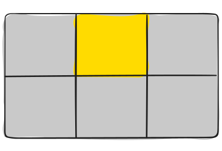

CSS Grid Layout
Something that will make your work easier
Main terms
Grid Container
The element on which display: grid is applied
Grid item
The children (i.e. direct descendants) of the grid container.
Here the item elements are grid items, but sub-item isn’t.
Grid Line
The dividing lines that make up the structure of the grid.

Here the yellow line is an example of a column grid line.
Cell
The space between two adjacent row and two adjacent column grid lines.
Grid Track
The space between two adjacent grid lines.

Here’s the grid track between the second and third row grid lines.
Grid Area
The total space surrounded by four grid lines.

Here’s the grid area between row grid lines 1 and 3, and column grid lines 1 and 3.
Grid properties
Properties for the Parent
(Grid Container)
Properties for the Children
(Grid Items)
Properties for the Parent
display
Defines the element as a grid container and establishes a new grid formatting context for its contents.
-
values:
- grid – generates a block-level grid
- inline-grid – generates an inline-level grid
.container {
display: grid | inline-grid;
}
grid-template-columns
grid-template-rows
Defines the columns and rows of the grid with a space-separated list of values.
.container {
display: grid;
grid-template-columns: 1fr 40px 50% 20rem;
grid-template-rows: 25% 100px auto;
}
.container {
display: grid;
grid-template-columns: 40px 50px auto 50px 40px;
grid-template-rows: 25% 100px auto;
}

grid-template-areas
Defines a grid template by referencing the names of the grid areas which are specified with the grid-area property.
- <grid-area-name> – the name of a grid area specified with grid-area
- . – a period signifies an empty grid cell
- none – no grid areas are defined
.container {
grid-template-areas:
" | . | none | <grid-area-name>"
"...";
}
.item-a {
grid-area: header;
}
.item-b {
grid-area: main;
}
.item-c {
grid-area: sidebar;
}
.item-d {
grid-area: footer;
}
.container {
display: grid;
grid-template-columns: 50px 50px 50px 50px;
grid-template-rows: auto;
grid-template-areas:
"header header header header"
"main main . sidebar"
"footer footer footer footer";
}
grid-template
A shorthand for setting grid-template-rows, grid-template-columns, and grid-template-areas in a single declaration.
- <grid-template-rows> / <grid-template-columns> – sets specified values, respectively, and sets grid-template-areas to none
- none – sets all three properties to their initial values
.container {
display: grid;
grid-template-columns: auto 50px auto;
grid-template-rows: 25px 25px;
grid-template-areas:
"header header header"
"footer footer footer";
}
.container {
display: grid;
grid-template:
"header header header" 25px
"footer footer footer" 25px /
auto 50px auto;
}
gap
Specifies the size of the grid lines.
.container {
display: grid;
gap: <grid-row-gap> <grid-column-gap>
}
.container {
display: grid;
gap: 15px 10px
}

justify-items
Aligns grid items along the inline (row) axis
-
Values:
- start – aligns items to be flush with the start edge of their cell
- end – aligns items to be flush with the end edge of their cell
- center – aligns items in the center of their cell
- stretch – fills the whole width of the cell (this is the default)
.container {
justify-items: start;
}

.container {
justify-items: end;
}

.container {
justify-items: center;
}

.container {
justify-items: stretch;
}

align-items
Aligns grid items along the block (column) axis
-
Values:
- start – aligns items to be flush with the start edge of their cell
- end – aligns items to be flush with the end edge of their cell
- center – aligns items in the center of their cell
- stretch – fills the whole width of the cell (this is the default)
.container {
align-items: start;
}

.container {
align-items: end;
}

.container {
align-items: center;
}

.container {
align-items: stretch;
}

justify-content
This property aligns the grid along the inline (row) axis
-
Values:
- start – aligns the grid to be flush with the start edge of the grid container
- end – aligns the grid to be flush with the end edge of the grid container
- center – aligns the grid in the center of the grid container
- stretch – resizes the grid items to allow the grid to fill the full width of the grid container
- space-around - places an even amount of space between each grid item, with half-sized spaces on the far ends
- space-between – places an even amount of space between each grid item, with no space at the far ends
- space-evenly – places an even amount of space between each grid item, including the far ends
.container {
justify-content: start;
}

.container {
justify-content: space-around;
}

.container {
justify-content: space-between;
}

.container {
justify-content: space-evenly;
}

Properties for the Children
justify-self
Aligns a grid item inside a cell along the inline (row) axis
-
values:
- start – aligns the grid item to be flush with the start edge of the cell
- end – aligns the grid item to be flush with the end edge of the cell
- center – aligns the grid item in the center of the cell
- stretch – fills the whole width of the cell (this is the default)
.item-a {
justify-self: start;
}

.item-a {
justify-self: end;
}

.item-a {
justify-self: center;
}

.item-a {
justify-self: stretch;
}

align-self
Aligns a grid item inside a cell along the block (column) axis
-
values:
- start – aligns the grid item to be flush with the start edge of the cell
- end – aligns the grid item to be flush with the end edge of the cell
- center – aligns the grid item in the center of the cell
- stretch – fills the whole width of the cell (this is the default)
.item-a {
align-self: start;
}

.item-a {
align-self: end;
}

.item-a {
align-self: center;
}

.item-a {
align-self: stretch;
}

grid-area
Gives an item a name so that it can be referenced by a template created with the grid-template-areas property
- <name> – a name of your choosing
- <row-start> / <column-start> / <row-end> / <column-end> – can be numbers or named lines
.item {
grid-area: <name> | <row-start> / <column-start> / <row-end> / <column-end>
}
.item-d {
grid-area: header;
}
.item-d {
grid-area: 1 / col4-start / last-line / 6;
}